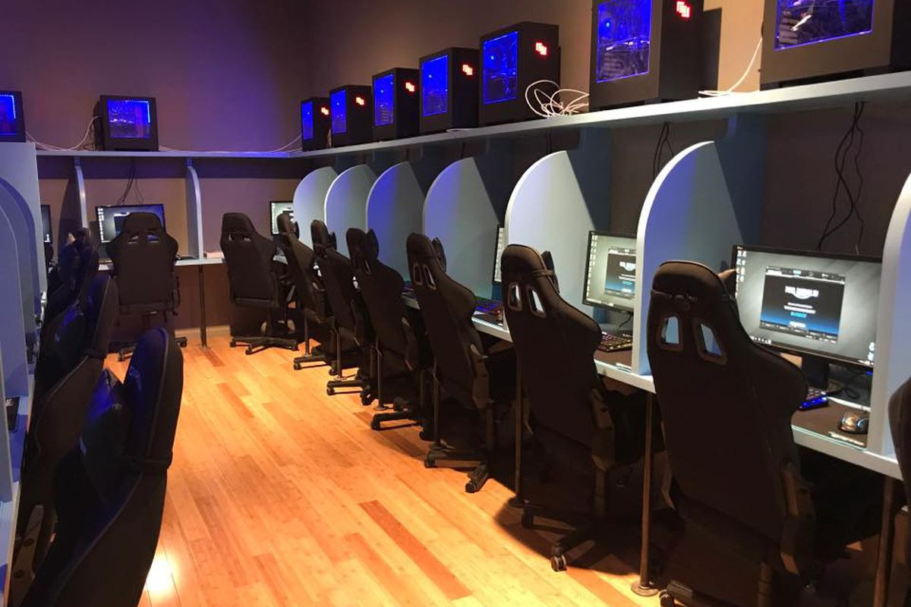
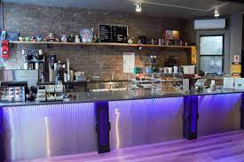
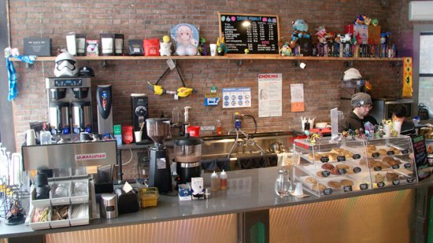

Describing itself as “New York’s Premier Esports & Internet Café,” Waypoint Café is truly one of a kind in the role it fills. Unlike most of the internet cafés of over a decade ago, Waypoint makes sure to utilize that second part of its name well in providing quality food in addition to giving their community an accessway to gaming in all kinds of ways, all while having affordable prices. Speaking of community, Waypoint delivers in their regular hosting of events such as local game tournaments and esport league watch parties on top of being a solid place to bring friends. Located on one of many streets in the Lower East Side: Ludlow Street, visitors to the area should make sure to keep a keen eye out for it so as to not miss out on a gem.
Visit the Waypoint Café website here!  
As the first major project given to Nest+M students in AP Language & Composition, we had to write about an everyday place or event in New York City that we consider to be a landmark because of its meaning to us. The final work we gave in would be a description of an aspect of “our New York” and called the “Write Your New York” project. To take in and build the necessary writing skills and techniques for the project, we analyzed multiple texts all about New York City, taking note of methods the writers of those texts employed that we could use in our writing. Texts we looked through and read include “City Limits” by Colson Whitehead, “Crossing Brooklyn Ferry” by Walt Whitman, and texts from multiple prominent Nuyorican figures. After completing the “Write Your New York” project, all of the papers from Nest+M students of a place that represents an aspect of “their New York” were put with their landmark locations on a custom google map.